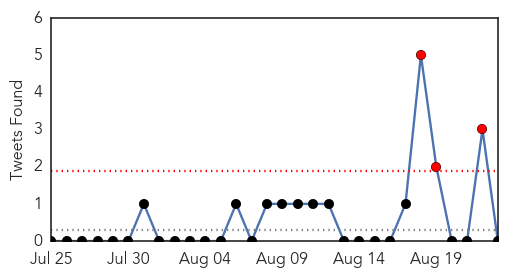
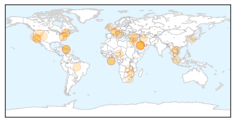
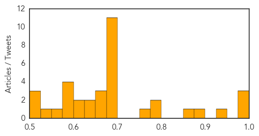
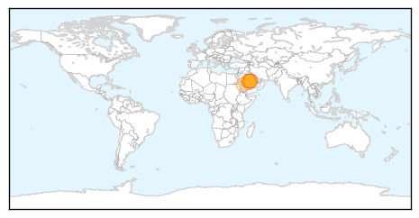

Unknown
30-Day Web Trend
0 alerts, 6 warnings

30-Day Twitter Trend
7 alerts, 2 warnings

Article Locations
Article Confidences
Top Articles:
- 0.997
- Saudi Arabia Reports 6 New Cases of MERS
- 0.996
- Saudi bans hospital guards from travelling over MERS outbreak
- 0.989
- H5N1: Saudi Arabia: Health Minister al-Falih blames MERS outbreak on lack of infection control
- 0.937
- Legionnaires' Disease Shows Up In Quincy
- 0.880
- Health Officials Probe 2nd Plague Case at Yosemite Park
- 0.862
- El Dorado County reminder: Squirrels and chipmunks can carry plague
- 0.798
- Health officials investigating second case of human plague in California
- 0.789
- Alangalang, Leyte to conduct massive treatment vs schistosomiasis
- 0.758
- Health officials investigating plague case in Georgia
- 0.696
- Investigative Reporting from the United Nations
- 0.690
- The Caledonian-Record
- 0.690
- The Caledonian-Record
- 0.687
- Security under scrutiny in wake of foiled French train attack
- 0.677
- Thousands protest against Lebanese govt over uncollected rubbish
- 0.677
- British foreign secretary re-opens Tehran embassy
- 0.677
- Suspected Boko Haram militants ambush Nigerian army chief's convoy
- 0.677
- ‘Lack of equipment’ hampers search for Bangkok bomber
- 0.677
- American French train attack heroes ‘were ready to fight to end’
- 0.677
- Abbas steps down as PLO chief to force new elections
- 0.675
- Investigative Reporting from the United Nations
- 0.674
- Investigative Reporting from the United Nations
- 0.663
- Investigative Reporting from the United Nations
- 0.656
- Tours to S. Korea cheaper, Singapore News & Top Stories
- 0.643
- Recreational users of the Russian River are encouraged to take precautions
- 0.642
- South Korea aims to lure tourists back post-MERS
- 0.625
- Ohio River health advisory lifted after algae levels drop
- 0.623
- Water systems sink teeth into debate over drinking it
- 0.585
- Climate change contributing to the prevalance of Malaria in Malawi
- 0.585
- Yield Loss to Virus not as Heavy as Expected
- 0.583
- Inner City Press -- Investigative Journalism from the inner city to Wall Street to the United Nations
- 0.580
- Contact lens wearers are risking blindness
- 0.553
- Foot and Mouth Disease spreads
- 0.549
- Alberta: 3 Syncrude’s Beaver Creek Bison confirmed anthrax positive
- 0.524
- The Post
- 0.518
- King, PM revitalise health sector
- 0.514
- Pattaya News, Communities, Opinions and much more...
Top Tweets:
- 0.720
- RT: Viendo cómo ordeñan una vaca ver como cae el miao de la misma en el tobo de leche es como para dejar de comer queso pero ojos…
- 0.558
- 6 more MERS cases in burgeoning Riyadh hospital outbreak. 2 of today's are healthcare workers. Count nearing 100? http://t.co/NFQ89yAtEa
MERS
30-Day Web Trend
1 alerts, 0 warnings

30-Day Twitter Trend
0 alerts, 3 warnings

Article Locations
Article Confidences

Top Articles:
Top Tweets:
- 0.611
- AFD Blog `Referral: @MackayIM On The Spread Of MERS-CoV' http://t.co/JgjQquaEXV
- 0.597
- AFD Blog `Saudi MOH: Riyadh MERS Cluster Adds 6 More Cases' MERS-CoV http://t.co/GkC7KHu92t
- 0.566
- AFD Blog `Saudi MOH Statement On The Riyadh MERS Outbreak – Aug 23rd' MERS-CoV http://t.co/lTlAHqBEOY